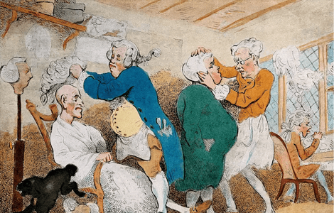
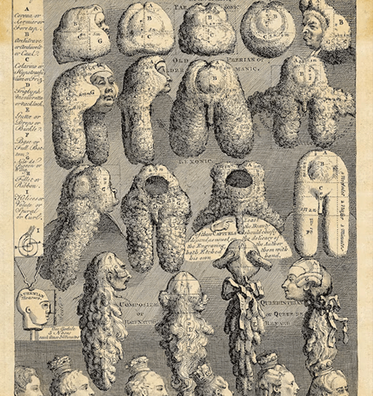

NATIONAL GEOGRAPHIC

This French king took men’s hair to new heights
HISTORY & CULTURE
- 
- 
Dolly Parton is credited with the phrase “the higher the hair, the closer to God,” but King Louis XIV might have shared her sentiments some 300 years earlier. The French king, famous for his ostentatious sense of style, donned wigs with long flowing locks, and men around the continent from kings to commoners followed suit.
Covering up
Wigs had been around for millennia in Europe and the Mediterranean before Louis XIV’s reign. Some of history’s oldest wigs were donned by the elite of ancient Egypt, both in life and death. Wigs have been found on mummies’ heads, and ancient tombs contain wig boxes along with other personal items.
In ancient Greece, wigs were used mostly by actors in plays. Some Romans wore fashionable wigs; wealthy women favored blond hair imported from Germany. During the Middle Ages, the church discouraged wig wearing, calling for simpler hairstyles for women and men.
Attitudes toward wigs changed drastically during the reign of England’s Queen Elizabeth I (1558-1603). The aging queen hid her thinning hair with a collection of more than 80 red wigs. The archaic term for wig, periwig, from the French perruque, made one of its earliest written appearances in the 1590s, in William Shakespeare’s early play The Two Gentlemen of Verona.
These English roots would give way to French dominance by the mid-17th century, when the 23-year-old king of France went prematurely bald in 1624. Before his hair loss, King Louis XIII had worn his natural hair luxuriantly long, a sign of health and virility. Thinning hair and baldness had become associated with sickness, perhaps because those who suffered from syphilis were “treated” with mercury, whose toxic effects included hair loss. To give the appearance of long locks, the king’s hairpiece was constructed from three broad sections of hair joined together. Once adopted by Louis XIII, wig wearing was embraced by the court elite as a status symbol.
Tresses and toupees
Louis XIII may have started the trend, but his successor, Louis XIV, would take it to new heights. The four-year-old king succeeded his father in 1643, when Europe’s fashion capital was Madrid. The Spanish preference for elegantly dark, severe clothing held sway.
As he grew, Louis XIV wore his brown hair in long, wavy curls. Before the king began to bald, he supplemented his natural hair with falls to give it more volume. Like his father, he began to lose his hair and regularly wore wigs to disguise it. By the time Louis XIV was in his 30s, he gave up on half measures and wore a long, full bottomed wig of tight curls, created for him by his personal barber
The king employed 48 wigmakers in his retinue. They brought innovation to the craft by knotting strands of hair and interlacing them in intricate patterns with silk threads, which created an effect of flowing tresses. Woven bands were then sewn onto a light textile cap shaped to the wearer’s head. The weighty, full-bottomed wig popularized by Louis XIV was a labor-intensive creation that required roughly 10 heads of human hair.
Comments :
- john Very good
- john Very good
Leave a Reply
Your email address will not be published. Required fields are marked*
Related posts:
-
 Scotland could become first ‘rewilded’ nation what does that mean
Scotland could become first ‘rewilded’ nation what does that meanAt the end of the last ice age, Scotland was a truly wild place, where the Highland tiger, a distinctly banded wildcat, and the wolf, lynx, and bear roamed among Caledonian pine forests
View article -
 Secrets of Harriet Tubman’s life are being revealed 100 years later
Secrets of Harriet Tubman’s life are being revealed 100 years laterWe all think we know the Harriet Tubman story. The “Moses of her people,” Tubman née Araminta “Minty” Ross was born enslaved on Maryland’s Eastern Shore around 1822. From a young age her enslavers rented
View article -
 Is Algeria the next great travel destination in Africa
Is Algeria the next great travel destination in AfricaDespite its proximity to Europe, and vast presence on the north coast of Africa roughly the size of Alaska and Texas combined—Algeria and many of its most spectacular sights are little known to travelers outside of its borders.
View article